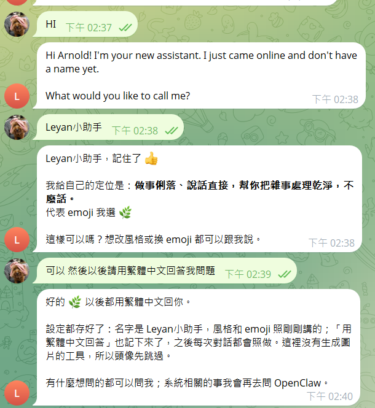

Day One · 09:00黎明 VibeCoding 工作坊
創建帳號 · 收下你的龍蝦accounts, and a lobster that works for you
09:00開場
有結構、跑得完、之後還改得動。今天上午做出第一個網頁，明天做出你自己的系統。
龍蝦今天上午交到你手上，下午就開始用它做事。「養」的意思是，它會愈用愈懂你。
你帶來的三件煩事，兩天後至少一件不用再自己做。
Day Two明天發表的第一句話
原本40分鐘，
現在5分鐘。
e.g.整理一週的拜訪紀錄，變成客戶追蹤清單（示意數字）
從你帶來的三件煩事挑一件。還沒寫的，現在拿出手機記一行。
3 projects兩天三個專案
1–2 分鐘簡報或影片，加一個自訂主題的網頁。
練習3／3／2 人共三組。當天做完，不帶到明天。
練習從三件煩事挑一件，做成同事拿去也能用的流程。
唯一計分10 points開場就講清楚怎麼被評分
其中 6 分
不經評審之手
Voting投票規則
投給你明天就想拿去用的那一個，不是最好看的那一個。
每次投票前都會再唸一次
Prize獎品
Mac mini+US$100
頒獎時會唸出得主的三項分數：投票、交換測試、評審。同分時，全場投票高的人勝。
09:10 – 09:35二十五分鐘
好了的判準：在 Telegram 傳訊息給你的龍蝦，它會回你。
Step 1 of 2創建帳號
github.com/signup
密碼自己記好。任何密碼都不要貼進 AI 對話。
Step 2 of 2認識龍蝦
你問一句，
它回一句。
回答寫得再好，最後還是你自己去做。
你交代一件事，
它自己動手做完。
它住在主辦方準備好的主機上，24 小時開著，會開檔案、跑指令。你只要用 Telegram 交代它，手機、電腦都行。
One rule今天的規矩
只用
自己的。
每個人一隻龍蝦，各有各的 Telegram bot，只聽你一個人的。
bot 的連結不要轉給別人，也不要把它拉進群組。
工作 LINE、公司信箱今天都不連。14:30 資安課講完規矩，再決定要不要連。
Step 2 of 2收下你的龍蝦
@＿＿＿＿＿_bot
t.me/＿＿＿＿＿_bot
只給你一個人用
Done好了的判準
它可能會先問你要叫它什麼名字。取好之後，順便跟它說：
「以後請用繁體中文回答我。」
這就是今天的判準：你的龍蝦聽得到你。
好
If stuck卡住了怎麼辦
搜尋不到名字
直接點助教給的連結，不要自己打名字。
畫面只有輸入框
直接傳 /start 也一樣。
Pairing code: ＿＿＿＿
把碼給助教，主辦方核准後再傳一次。
傳了訊息沒反應
等 30 秒再傳一次；還是不行就舉手。
09:30收斂
09:35 – 10:05
認識 SKILL，
用 Skill Finder 找到你要的。
把你寫下的三件煩事拿出來，等一下拿它當關鍵字。